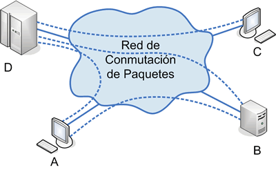

1961
Primer concepto de redes de computadoras
-Leonard Kleinrock publica un artículo sobre la teoría de la conmutación de paquetes, un concepto clave para el futuro de Internet.
-Leonard Kleinrock publica un artículo sobre la teoría de la conmutación de paquetes, un concepto clave para el futuro de Internet.
-Se establece ARPANET (Advanced Research Projects Agency Network), financiado por el Departamento de Defensa de EE. UU.
-Ray Tomlinson envía el primer correo electrónico y utiliza el símbolo "@" para separar el nombre del usuario y el dominio.
-Se adopta oficialmente el protocolo TCP/IP, permitiendo la interconexión de redes.
-Tim Berners-Lee desarrolla el primer navegador web llamado WorldWideWeb.
-Mosaic introduce una interfaz gráfica amigable con imágenes y botones.

-Se funda Amazon y Yahoo!, revolucionando el comercio en línea.

-JavaScript y PHP permiten la creación de sitios web dinámicos.
-Facebook se lanza inicialmente para estudiantes de Harvard.
-ChatGPT y Web3 están transformando la tecnología web.